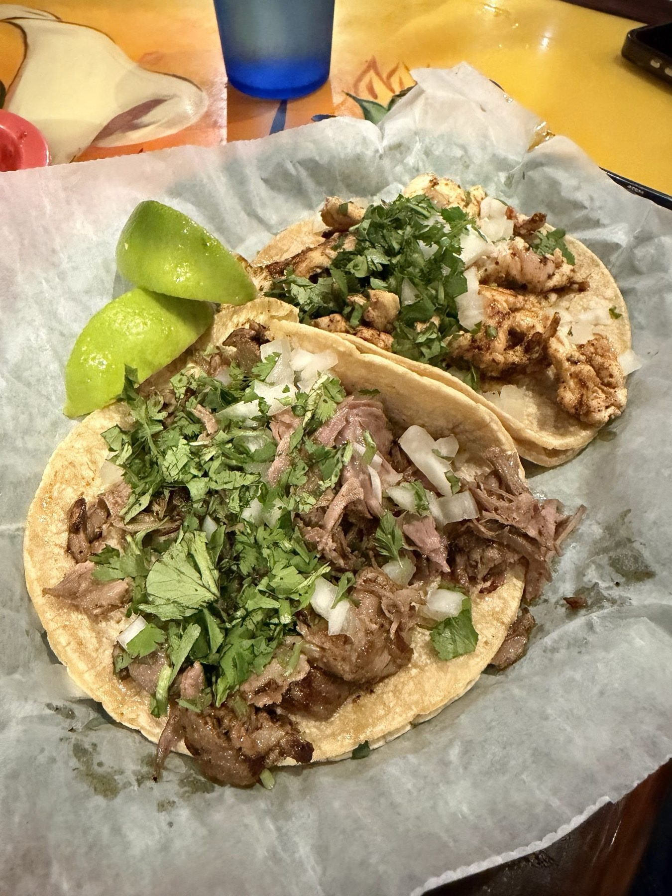

Fajitas
Combo steak and chicken fajitas for two with queso and chips. Fajitas Acapulco too.
Mexican restaurant & cantina · Bloomington, IN
Street tacos, queso fundido and combo fajitas on East 3rd Street.

Lo que piden
What we cook most.
Combo steak and chicken fajitas for two with queso and chips. Fajitas Acapulco too.

Enchiladas, chimichangas and carnitas, served the traditional way with rice and beans.

Daily lunch combos and light lunches, available until 3 in the afternoon.


4.3 ★ · 979 Google reviews
Viva Mas might just have the friendliest people in Bloomington! Seriously, every time we walk through the door, we’re greeted with such genuine warmth and kindness. They make everyone feel welcome, remember the little things, anticipate what you need, and truly care about the people they’re serving. It’s hospitality at its absolute best. And the food is fantastic!
Food was amazing, very flavorful! Margaritas were great! For appetizers we had the classics: chips, salsa, guacamole, and queso. The salsa and guacamole have lots of flavor, and we love how thick the queso was too. Our kid had a cheese quesadilla with rice, and we had the street tacos with a side of refried beans and rice. Everything was excellent! The meat in our tacos was very savory!
We got the combo steak & chicken fajitas for two, queso with chips and salsa, sodas each, and we were in and out within 25 minutes with full bellies and reasonable check (49 and change before tip). Our waitress was on top of everything. We loved the atmosphere as well. Great food, prices, and service.
Nuestra historia
A cantina with a full bar and a traditional setting. Painted murals climb the pillars, star lanterns hang overhead and every booth has its own picture.
Friendly crew, fast service and a clean room, bathrooms included.

Ven a vernos
2550 E 3rd St, Bloomington, IN 47401
Lunch combos daily until 3 PM. Margaritas and a full bar whenever we are open.